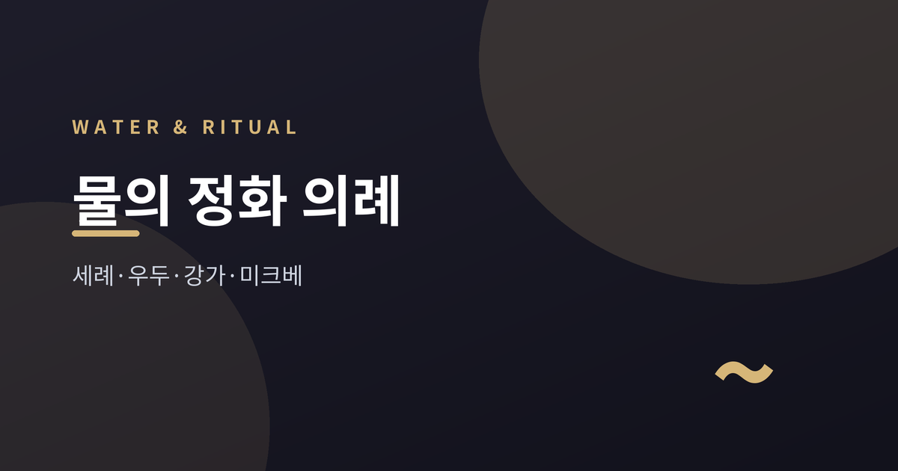
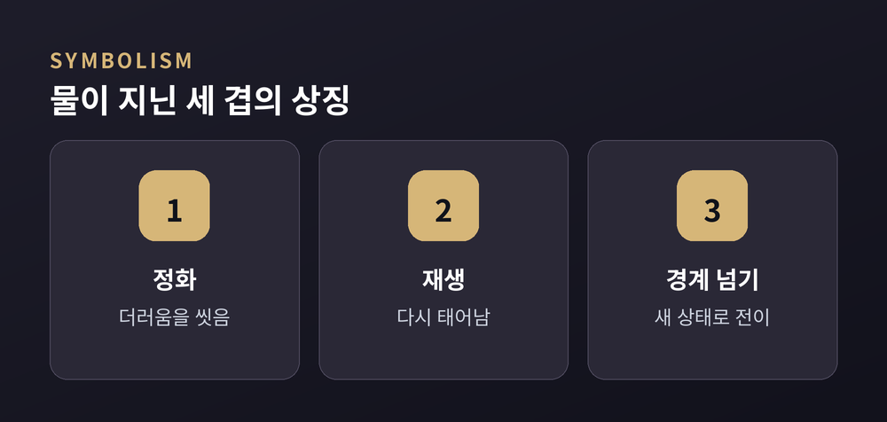
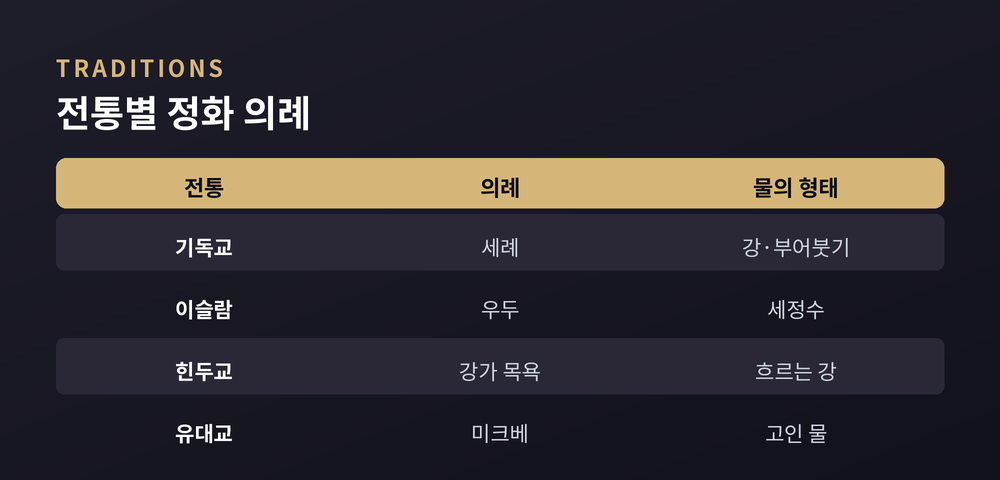
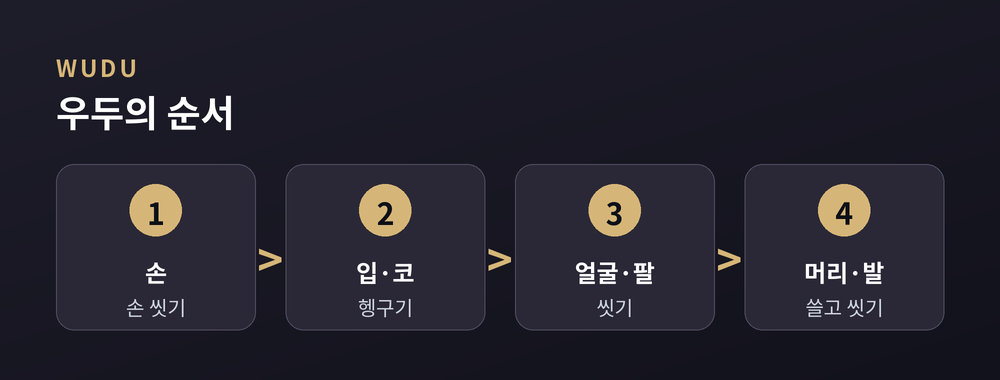
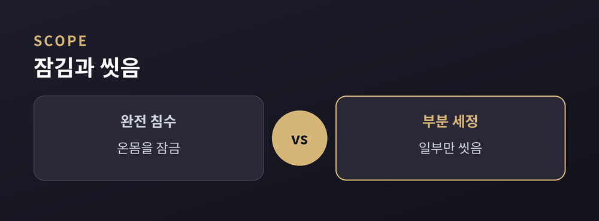

세례·우두·강가·미크베로 보는 씻음의 상징

이번 글에서는 여러 종교가 물로 몸과 마음을 씻는 정화 의례를 정리해 보겠습니다.
기독교의 세례, 이슬람의 우두, 힌두교의 강가 목욕, 유대교의 미크베를 나란히 놓고 봅니다.
특정 신앙을 옹호하거나 비판하지 않고, 비교종교의 관점에서 담담히 살펴보려 합니다.
거의 모든 큰 종교가 물을 씁니다.
물이 단순한 물질을 넘어 상징이기 때문입니다.
종교학자 미르체아 엘리아데는 물을 가장 오래된 상징으로 보았습니다.
물은 모든 가능성이 담긴 저수지이자, 죽음과 부활을 동시에 품는다고 설명했습니다.
그는 이렇게 압축했습니다. "물은 언제나 이중의 의미를 지닌다 — 죽음과 재생."
물에 잠기는 일은 태초의 혼돈으로 돌아가는 죽음에 가깝습니다.
동시에 그 물에서 새 생명이 다시 태어납니다.
많은 창조 신화가 태초의 물에서 세상이 솟아났다고 전합니다.
이집트 신화의 태초 바다 눈이 그런 예입니다.
물은 삶과 죽음, 이전과 이후를 가르는 경계이기도 합니다.
정리하면 물의 상징은 세 겹입니다.
씻어내는 정화, 다시 태어나는 재생, 새 상태로 건너가는 경계 넘기입니다.

기독교의 세례는 입문의 의례입니다.
물과 함께 삼위일체의 이름을 부르며, 과거의 씻김과 새 생명으로의 거듭남을 표합니다.
방식은 교파마다 다릅니다.
몸을 완전히 담그기도 하고, 머리에 물을 붓거나 몇 방울 뿌리기도 합니다.
완전히 잠그는 방식은 요단강에서 세례 요한에게 세례받은 모습을 본뜬 것입니다.
어느 형태가 원형인지를 두고는 교파마다 견해가 갈립니다.
힌두교는 성스러운 강가의 물을 크게 숭배합니다.
강물에 몸을 담그면 죄가 씻긴다고 믿어집니다.
12년 주기로 열리는 쿰브 멜라에는 수백만 명이 모여 강에 몸을 담급니다.
가장 신성한 곳은 갠지스와 야무나, 전설의 사라스와티가 만나는 합류점입니다.
유대교의 미크베는 의례용 목욕입니다.
핵심은 몸을 씻는 것이 아니라 상태가 바뀌는 것입니다.
그래서 미크베는 물리적 청결이 아니라 영적 전이의 의례로 설명됩니다.
개종의 마지막 단계, 월경과 출산 뒤의 정결 회복 등에 쓰입니다.
개종자의 침수는 세 명의 랍비 법정이 지켜보는 가운데 이루어집니다.

이슬람의 정화는 부분 세정과 전신 세정으로 나뉩니다.
작은 부정 뒤에는 우두를, 큰 부정 뒤에는 구슬을 행합니다.
우두는 예배나 꾸란 독송 전에 몸의 일부를 씻는 의례입니다.
손을 씻고, 입과 코를 헹구고, 얼굴과 팔을 씻습니다.
이어 머리와 귀를 쓸고, 발을 씻습니다.
순서를 지켜 끊김 없이 이어 가는 것이 특징입니다.
대소변이나 깊은 잠 뒤에는 우두가 무효가 되어 다시 행합니다.
구슬은 온몸을 씻는 대정화입니다.
금요 예배와 명절 예배 전, 순례를 준비할 때, 이슬람으로 개종한 뒤에 행합니다.
같은 물이지만 씻는 범위와 계기가 다릅니다.
작은 흐트러짐은 우두로, 큰 전환은 구슬로 나누어 다루는 셈입니다.

이렇게 놓고 보면 닮은 점이 먼저 보입니다.
모두 물을 정화와 재생, 전이의 매개로 삼습니다.
대개 물리적 씻음보다 상태의 변화를 표합니다.
개종과 입문의 관문으로 물을 쓰는 전통도 많습니다.
차이도 뚜렷합니다.
물의 형태부터 다릅니다.
흐르는 강, 고인 의례수, 흘려보내는 세정수로 갈립니다.
범위도 완전 침수와 부분 세정으로 나뉩니다.
일생에 한 번인 의례가 있고, 예배마다 반복하는 의례가 있습니다.
불교의 관불, 신토의 미소기, 시크교의 암리트도 같은 결에 놓입니다.
물로 안을 씻는다는 발상은 이렇게 널리 퍼져 있습니다.
한 가지는 짚어 두겠습니다.
갠지스처럼 신성함과 실제 오염이 함께 놓인 강도 있습니다.
믿음의 상징과 현실의 물은 늘 같지 않습니다.

끝으로 한 마디만 더 드리겠습니다.
전통마다 물의 형태도, 절차도, 뜻도 다릅니다.
그런데 씻어 새로워진다는 마음은 이상하리만치 닮았습니다.
"물은 죽음이자 재생이다" — 오래된 이 상징이 오늘도 강가와 예배당에 흐르고 있습니다.
우리가 물 앞에서 잠시 옷깃을 여미는 이유도, 어쩌면 그 오랜 기억 때문일지 모릅니다.
참고 소스